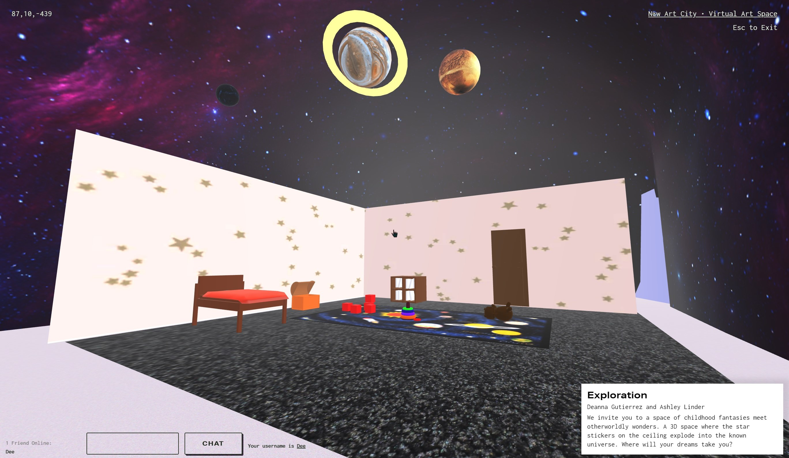

Charlie, Blender, 2018
Dimensions: 812 x 721 px
This is a 3D model of my first character that I made using Blender while
in a computer animation class. His name is Charlie and my inspirations for this
character was Bart, from The Simpsons, and Animal Crossing. The inspiration behind
his story resembles Narnia. The story behind this character was that he was a
mischevious boy who recently moved into a new, small town. His parents left him to
explore their new house. He looks around his room and finds a new world hidden
behind the wall of his closet. The young and curious Charlie explore these new lands
only to get into some trouble resulting in him scurrying his way back into his world.

Carrot Bunny, Mesh Mixer/Dimensions, 2021
Dimensions: 813 x 580 px
This is another 3D model that I put together in Art 74. I got the 3D modeled carrot from
Google Poly and the rabbit was a default from Mesh Mixer. I used Mesh Mixer to combine the
parts of the carrot to the bunny and then imported it into Adobe Dimensions. I used Dimensions
to add color, textures, and the background. The concept of my carrot bunny is you become what
you eat. The sto behind this concept is A bunny’s life was changed forever when he chose to
follow and eat a mysterious carrot. Little did he know he was being lured by a witch from another
dimension. The bunny was lured from his home forest into this plain, desertlike world.There it finally was,
the very thing that brought him there to begin with was now beside him, the carrot. The bunny happily
munched away at it, not realizing the consequences that awaited him. Unfortunately, he was not aware there
was something suspicious about his next meal and that this small delight was to make him a treat in the same way.
To his horror, parts of him started becoming the very vegetable he ate in a matter of minutes.
Now, the bunny awaits his tragic fate.

Exploration, Blender, 2020
Dimensions: 813 x 472 px
This project was a collaboration between me and my mentor, Ashley Linder, while we
were in the Cadre Mentorship program. The concept of this project was dreams and was featured
in a New Art City exhibition last semester of November 2020. Ashley and I primarily used Blender
for the 3D modeling. I modeled the toys and planets and Ashley modeled the room, furniture, and
added the textures.